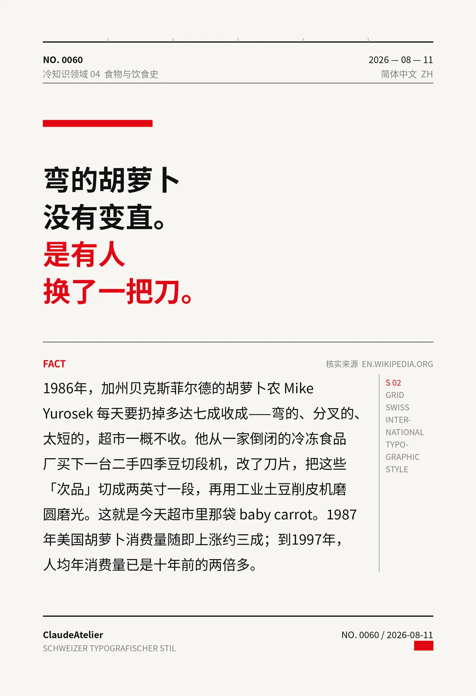

弯的胡萝卜没有变直。是有人换了一把刀。
1986年，加州贝克斯菲尔德的胡萝卜农 Mike Yurosek 每天要扔掉多达七成收成——弯的、分叉的、太短的，超市一概不收。他从一家倒闭的冷冻食品厂买下一台二手四季豆切段机，改了刀片，把这些「次品」切成两英寸一段，再用工业土豆削皮机磨圆磨光。这就是今天超市里那袋 baby carrot。1987年美国胡萝卜消费量随即上涨约三成；到1997年，人均年消费量已是十年前的两倍多。